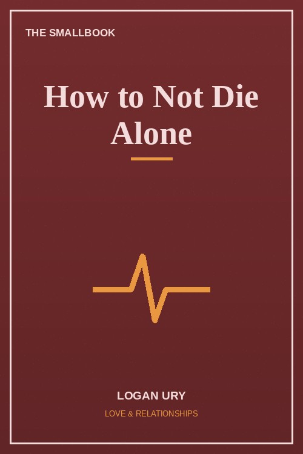

Library › Love & Relationships
How to Not Die Alone - Summary & Key Lessons

The surprising science of modern dating, from a Google behavioural scientist.
📖 OPEN THE FULL INTERACTIVE BREAKDOWN →🌐 Read it in Hindi, Hinglish, Gujarati, Tamil & 22 more languages, with audio.
💡 The Big Idea
Logan Ury, who led Google's behavioural science team, applies decision research to dating. daters fall into three types, Romantics, Maximizers and Hesitators, each with a predictable failure mode. The fix is not more options or better photos. It is knowing your pattern, dating deliberately against it, and judging partners on the qualities that actually predict happiness: how they are in conflict, in kindness, in growth, not how they interview.
🧠 The 8 Key Lessons
Lesson 1: Know Your dating Blind Spot
Your dating Tendencies
Ury's three tendencies sabotage silently. The Romantic waits for a soulmate and rejects good people for lacking destiny. The Maximizer researches endlessly, treating partners like products to optimise and never feeling certain. The Hesitator waits to be ready, perfect, thinner, richer, someday. Each tendency feels like standards or caution from the inside. From the outside it is a machine for staying single, or for choosing the same wrong person repeatedly.
📖 Example: A Maximizer in the book keeps spreadsheets of dates and still cannot commit, because one more profile might be better. A Hesitator spends three years improving herself for a dating life she never starts. Naming the pattern is usually the moment it loses power. Read the full example →
⚡ Do this: Identify your tendency honestly. Write the sentence it whispers to you, and the counter-sentence you will practise instead.
Lesson 2: Make a Breakup List, Not a Wish List
Dating Deliberately
Most people list what they want: tall, funny, successful. Ury flips it: list the dealbreakers and the pattern of your past relationships, because you do not need help finding what attracts you; you need protection from what harms you. The breakup list names the qualities that made past relationships fail, controlling, avoidant, cruel in conflict, and becomes the filter that attraction cannot talk you out of.
📖 Example: A client kept choosing exciting, unreliable men and blaming bad luck. Her breakup list, drawn from three post-mortems, had one repeated word: unavailable. With the list on paper, the next exciting unavailable man was recognisable in two dates instead of two years. Read the full example →
⚡ Do this: Write your breakup list: the three qualities that ended or poisoned past relationships. Screen for their absence, not for butterflies.
Lesson 3: Judge the Second Date, Not the Spark
Dating Deliberately
First dates measure performance under nerves, not partnership potential. Ury argues the spark is a terrible predictor: it correlates with charisma and familiarity of pattern, often the wrong pattern. Slow-burn qualities, kindness, consistency, emotional steadiness, need a second look to become visible. Her rule: if a first date was pleasant but not electric, go on one more. Chemistry can be built; character is harder to retrofit.
📖 Example: Research couples who reported love at first sight and couples who grew into love show similar long-term happiness. Ury's daters who adopted the second-date rule repeatedly report that the person they almost dismissed became the one. The spark lied in both directions. Read the full example →
⚡ Do this: For the next month, give every decent first date a second one. Judge warmth and curiosity, not fireworks.
Lesson 4: The Post-Date Eight
Dating on Purpose
After each date, Ury prescribes eight questions: what side of me did they bring out, how did I feel, was there curiosity, laughter, did I feel heard? The questions retrain attention away from did they like me and was the venue nice toward the data that matters: who am I around this person, and is this how I want to feel in a life? Feelings about yourself on the date predict more than judgements about them.
📖 Example: A dater realised through the eight questions that with one man she became witty and relaxed, and with the more impressive one she became anxious and performative. The spreadsheet in her head had it backwards; her own state was the signal. Read the full example →
⚡ Do this: After your next date or outing with your partner, answer the Post-Date Eight in writing before telling anyone how it went.
Lesson 5: Decide, Then Make It Great
Committing
Ury imports a decision rule from successful long-term couples: they stopped maximising. At some point the search ends, not because the partner is provably optimal, but because commitment itself creates much of the goodness people credit to selection. The relationship you build beats the relationship you keep shopping for. Her closing challenge is to treat the decision to commit as the moment the real work, and the real rewards, begin.
📖 Example: Couples in long, satisfied marriages rarely describe choosing from abundance. They describe choosing, and then decades of small investments compounding. The Maximizer's fear, that commitment closes the door on better, has the accounting backwards: commitment is what opens the better. Read the full example →
⚡ Do this: If you are dating someone good and hesitating, set a decision date. Gather real data until then, then decide once, fully.
Lesson 6: Stop Looking for a Spark, Start Interviewing for Kindness
Dating Deliberately
Ury distinguishes qualities that impress on dates, wit, beauty, status, from qualities that sustain decades: emotional stability, kindness, loyalty, and a growth mindset. The second list is boring at a cocktail party and priceless at 3 a.m. with a sick child. Daters systematically overweight the first list because it is visible early. Her fix is a values list written in calm, consulted in excitement.
📖 Example: One dater's list said adventurous and ambitious; her happiest friends' partners were, on paper, unremarkable, and in practice, steady and kind. She rewrote her filters around how a man handled a delayed flight and a rude waiter, and her dating life changed within a month. Read the full example →
⚡ Do this: Write two lists: what impresses you, and what sustains people. Screen with the second for ninety days.
Lesson 7: Logistics Will Happily Eat Your Love Life
The Logistics of Love
Ury treats dating as a behaviour-design problem: intentions fail against friction. Apps reward endless browsing, calendars leave no slots, and ambiguity about who plans what kills momentum. Her remedies are structural: schedule dating like a commitment, decide defaults in advance (who suggests, when you follow up), and create deadlines for decisions. Romance does not die from systems; it dies from their absence.
📖 Example: A Hesitator kept meaning to date. Ury's intervention was embarrassingly practical: two calendar slots a week, a standing rule to reply within a day, and a friend who asked every Sunday. The market did not change; the logistics did. Read the full example →
⚡ Do this: Put dating in the calendar this week: two slots, one follow-up rule, one friend who will ask.
Lesson 8: Ambiguity Is a Decision You Are Already Making
Committing
The situationship, months of undefined togetherness, feels like keeping options open and functions as choosing the option of drift. Ury asks daters to notice that not deciding is deciding, usually in favour of the person who wants less. Defining the relationship is framed not as pressure but as information: two adults stating what this is, so both can invest or leave with dignity.
📖 Example: A couple in month eight of we are just seeing where it goes discovers, when finally asked, that one is seeing a future and the other is seeing convenience. The conversation hurts for a week. The drift would have hurt for a year. Read the full example →
⚡ Do this: If you are in an undefined situation past three months, ask the question this week, kindly and directly. Accept the answer as data.
✅ 5-Step Action Plan
- Name your dating tendency and its whisper; write the counter-sentence.
- Make a breakup list from your past relationships; screen with it.
- Give every decent first date a second date for one month.
- Answer the Post-Date Eight after each date, in writing.
- Date with a decision date, not an endless evaluation.
- Judge conflict style and kindness before charm and credentials.
- If partnered, apply the same: build the relationship you keep shopping for.
⚠️ When This Doesn't Work
The book speaks mostly to people dating in app-driven cities. Its decision tools translate well to other contexts, but the examples assume freedom to choose partners that not every reader has.
💀 The Graveyard Proves It
💬 Best Quotes from How to Not Die Alone
- “Great relationships are not found. They are made.”
- “Date for the life you want, not the resume you admire.”
- “The spark is not a screening tool. It is weather, not climate.”
Interactive version: mark lessons as read, listen in your language, share quote cards.